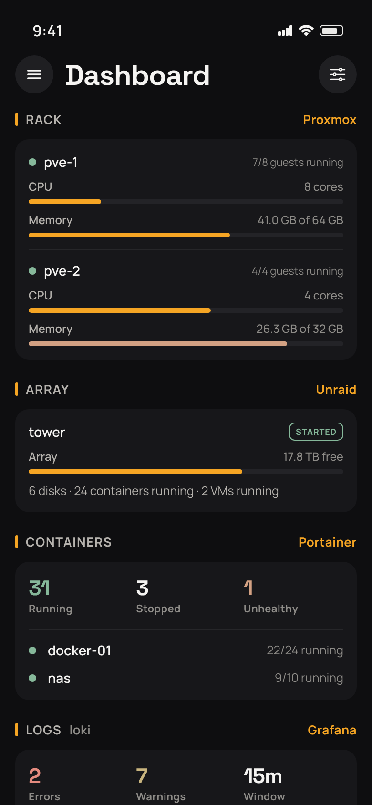
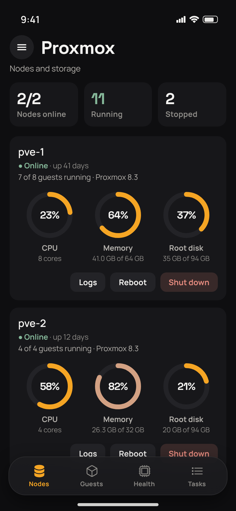
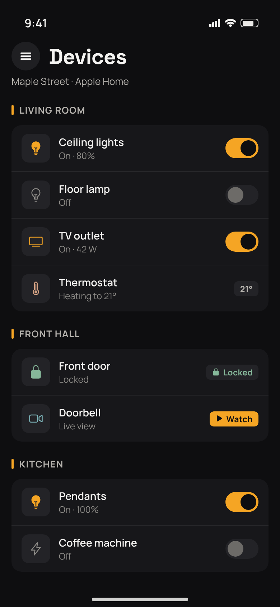
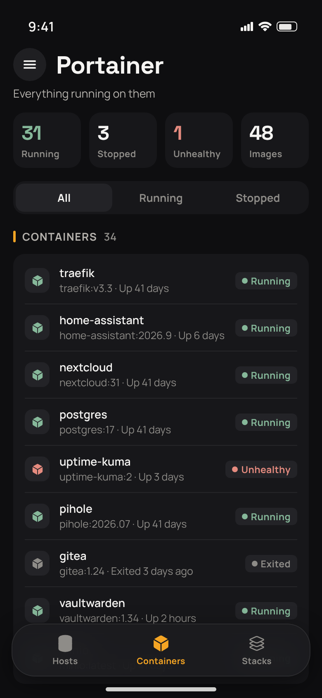
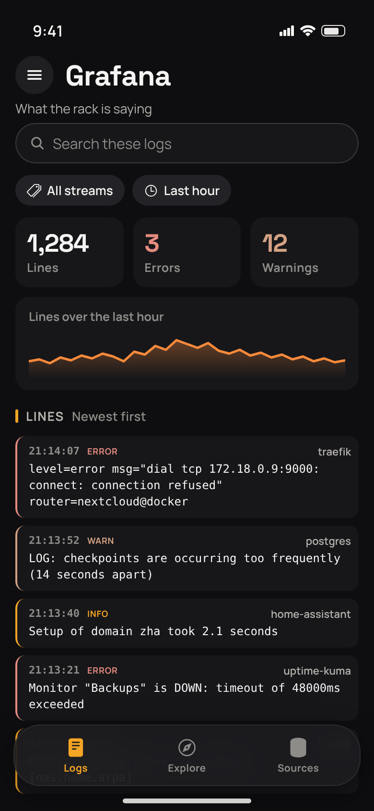
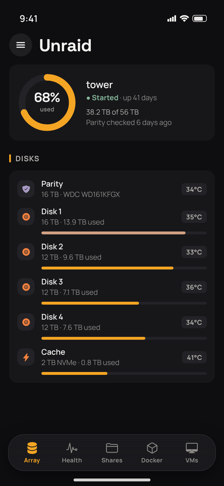
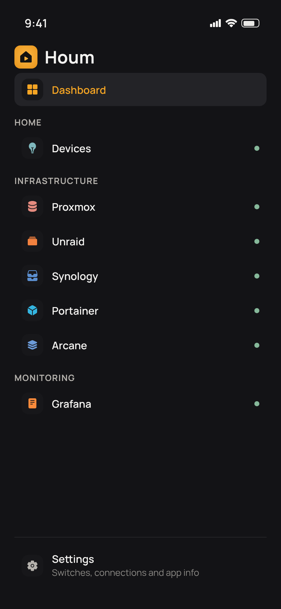

One app for the smart home and the self‑hosted stack behind it
Houm brings together the smart home your phone already belongs to and the servers that request, find, fetch, serve and store your media — Plex, Jellyfin, the *arrs, your downloaders, your NAS and your containers — in one app, with every service switched on only if you run it.
iPhone · Android · iPad · Mac · Apple TV · Android TV

A look inside
A drawer of places down the side, a bar of sections along the bottom, and the rack's own figures on a dark page.






Scroll sideways for more →
Every service, in one place
Houm is built out of modules. Connect the ones you run, and the app becomes exactly that.
Smart home
Apple Home · Google Home
- Every accessory in every home, grouped by room, with live reachability
- Lights, outlets, switches and fans on and off; doors locked and unlocked
- Watch a camera or doorbell's live feed full-screen on iPhone
Requests & library
Seerr · Radarr · Sonarr · Lidarr
- Discover trending, popular and upcoming films and shows, by genre, studio or network
- Request in one tap and follow it through approval; report issues
- Your libraries, what's queued, history, and a search for anything missing
Downloads
NZBGet · SABnzbd · Transmission · µTorrent
- Live speed, what's left and free disk space — and on SABnzbd, time remaining
- Pause or resume single items or the whole engine; remove with confirmation
- History of what finished, and torrents split into Downloading and Seeding
Media servers
Plex · Jellyfin · Audiobookshelf · Tautulli
- Watch and listen from your own Plex or Jellyfin, picking up where you left off
- Audiobooks and podcasts from Audiobookshelf, with how much is left
- Who's streaming right now — and stop a stream with a message to the viewer
Infrastructure
Proxmox · Unraid · Synology · Portainer · Arcane
- Nodes, VMs and containers across every Proxmox cluster, merged into one screen
- Unraid and Synology arrays, disks, health and shares
- Docker containers and stacks on every host — start, stop, restart, read the logs
Monitoring & assistants
Grafana · Chat · Siri Router
- Pull the logs of everything on the rack through the Grafana that fronts them
- Talk to your household's own bot, under an account of your own
- Ask the TV out loud — "play the next episode", "find Dune to request"
On every screen in the house
The same servers, the same connections — and an interface made for each device rather than the phone's stretched wider.
iPhone & Android
The full app, with a floating bar of sections that gets out of the way as you read.
iPad & Mac
The iPad app runs on Apple silicon Macs in a resizable window; poster walls fill the room.
Apple TV & Android TV
A lean-back interface of its own for watching from Plex and Jellyfin, with voice via Siri Router.
Home-screen widget
Now Playing on iOS: streams, bandwidth and who's watching, across Plex, Tautulli or Jellyfin.
Settings sync
Add a server on your phone and it's on your iPad — via iCloud on iOS, Backup on Android.
Light & dark
Follows your device's appearance, with no second setting to disagree with it.
Your network, your way
Self-signed certificates, local addresses and Cloudflare Access in front of your services all work.
No Houm account
No sign-up and no Houm server: the app talks straight to the services you connect.
What it supports
Every service is a module you switch on or off — what's on decides what the app looks like.
Home
- Apple Home
- Google Home
Requests & library
- Seerr
- Radarr
- Sonarr
- Lidarr
Downloads
- NZBGet
- SABnzbd
- Transmission
- µTorrent
Media servers
- Plex
- Jellyfin
- Audiobookshelf
Infrastructure
- Proxmox VE
- Unraid
- Synology DSM
- Portainer
- Arcane
Monitoring
- Tautulli
- Grafana
Assistants
- Chat
- Siri Router
Screens are shown with sample hosts, containers, figures and log lines. Product names belong to their owners; Houm is an independent client and is not affiliated with any of them.